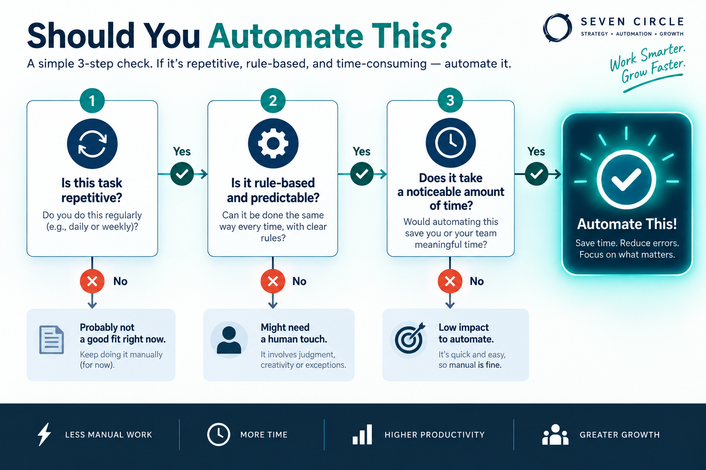
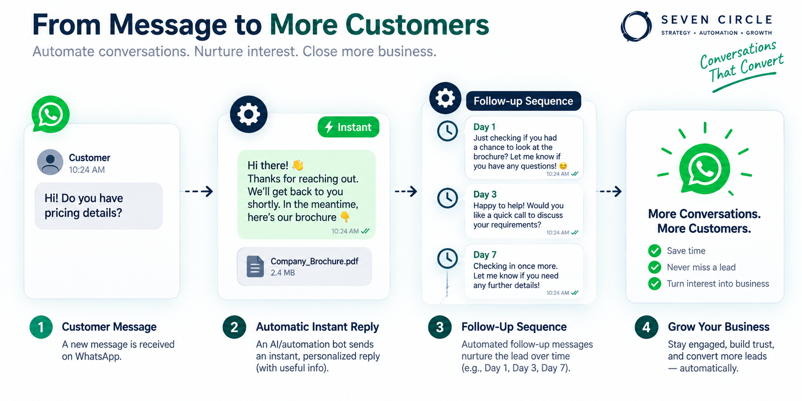
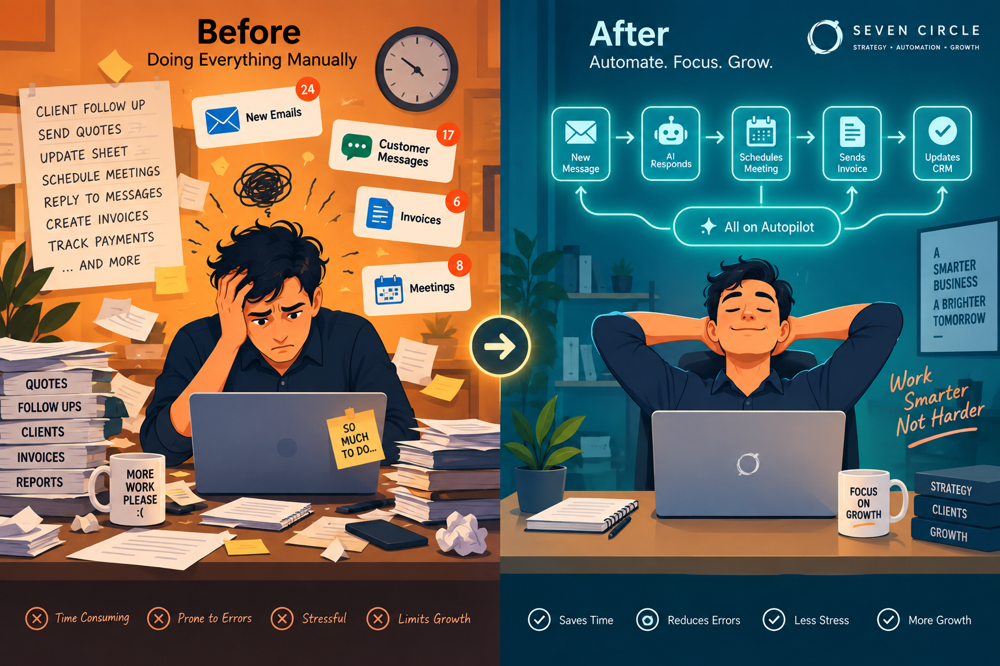
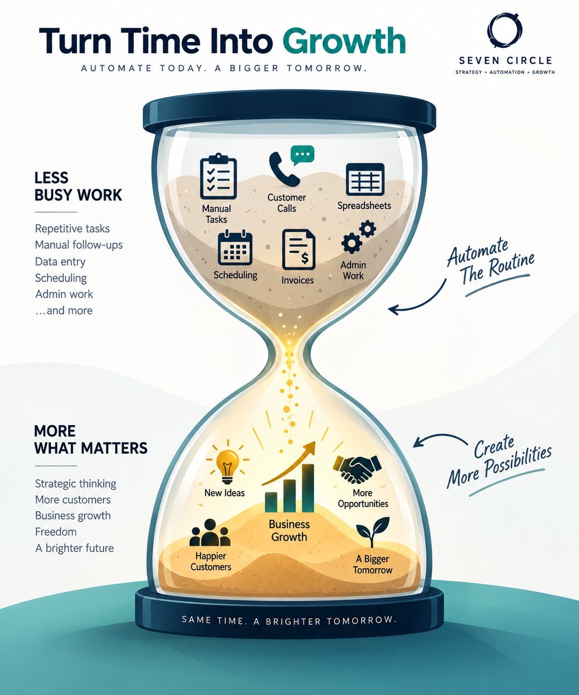

You didn't start a business to become its most overworked employee.
You started your business to build something — not to spend your entire day answering the same customer questions, manually updating spreadsheets, chasing invoices, and copy-pasting the same messages over and over.
But somehow, that's where most of your time goes. By the time the urgent daily tasks are done, there's no time left for the actual growth work — strategy, new offers, marketing and relationships — the things that would actually move your business forward.
Here's the good news: you don't need to hire a bigger team or work longer hours to fix this. You need to automate the repetitive work that's quietly eating your day — and AI-powered automation has made this more accessible and affordable than ever.
You didn't start a business to become its most overworked employee.
It is not a time problem.
It is a repetition problem.
Most overwhelmed business owners assume the fix is working harder or longer. But the real issue is usually simpler: the same task is being done manually, over and over, when it could run automatically.
Answering the same 10 customer questions. Manually confirming every order. Typing the same follow-up message to every new lead. None of these tasks need a human doing them fresh each time — they need a system built once, that then runs quietly in the background.
Ask three questions
before you automate.
Before automating anything, ask these three questions about each recurring task in your business:
- Does it happen more than five times a week?Look for a task that is frequent enough to create a meaningful time drain.
- Is it predictable and rule-based?It should follow a repeatable pattern, even when a few details change.
- Would someone prefer an instant response?If a customer or employee would not notice — or would welcome — the speed, it is a strong candidate.
If you answer yes to all three, that task is a strong automation candidate. This filter alone usually reveals three to five clear starting points in a small business.

Start with the work
that repeats.
1. Customer inquiries and FAQs
If you're manually answering the same questions about pricing, availability or how something works, an automated WhatsApp or chat flow can handle the majority instantly — 24/7, without you lifting a finger.
Where to start: Identify your five to ten most repeated customer questions and build a simple automated response flow for them first.
2. Lead follow-up
New leads that don't get an immediate response are far more likely to go cold or choose a competitor who replied faster. Automated follow-up messages — triggered the moment someone fills a form or messages you — keep leads warm without requiring you to be glued to your phone.
Where to start: Set up an instant “thank you for reaching out” message with next steps, even before a human follows up personally.

3. Appointment booking and reminders
Manually coordinating back-and-forth messages to book a time — and then manually reminding people the day before — eats hours every week and still results in no-shows.
Where to start: Automate booking links and reminder messages so scheduling and confirmations happen without a single manual message.
4. Order and payment confirmations
If you're manually messaging every customer to confirm an order or payment was received, that's a perfect candidate for an instant automated confirmation — improving customer experience while freeing up your time.
Where to start: Connect your order or payment system to an automated confirmation triggered the moment a transaction happens.
5. Repetitive data entry and reporting
Manually updating spreadsheets, copying data between tools or compiling the same weekly report by hand is exactly the kind of task AI automation tools can handle instantly and accurately.
Where to start: Identify one recurring report or data-transfer task and automate the data flow between the tools you already use.
6. Review and feedback requests
Manually remembering to ask every customer for a review — and often forgetting — means missed opportunities to build the trust signals your business needs to grow.
Where to start: Set up an automatic review request sent a set number of hours or days after a completed purchase or service.

What automation gives back
beyond saved time.
The real value of automation isn't just saved hours — it's redirected energy. Time that was going into repetitive tasks becomes time spent on the parts of your business only you can actually do.
| Before automation | After automation |
|---|---|
| You answer the same questions all day | Customers get instant answers, any time of day |
| Leads go cold waiting for a reply | Leads get an instant, warm response |
| No-shows from missed reminders | Automated reminders reduce no-shows |
| Manual, error-prone data entry | Accurate, instant data flow between systems |
| Reviews are forgotten or inconsistent | A steady, automatic flow of customer reviews |
| You're stuck doing tasks | You're free to focus on strategy and growth |

Start with one system.
Build from there.
You don't need to automate everything at once. Start with just one task — ideally the one eating the most time or causing the most missed opportunities, usually lead follow-up or repetitive customer questions. Get that running smoothly, then move to the next.
Trying to automate your entire business overnight usually creates more confusion than relief. A phased approach — one system at a time — builds momentum without the overwhelm.
Automate without
the tech headache.
At Seven Circle, our AI Automation for Business Operations service is built for business owners who know they need to stop doing everything manually, but don't have the time or technical background to figure out how.
- A task auditIdentify the highest-impact automation opportunities using the three-question filter.
- WhatsApp automationHandle instant customer replies, lead follow-up and order confirmations.
- AI-powered workflowsConnect the tools you already use without replacing your entire tech stack.
- Ongoing optimizationKeep improving the system as your business grows and new repetitive tasks emerge.
You started your business to grow it — not to become its busiest employee. Let's build the systems that free you up to actually do that.
Ready to find out exactly where automation could save you the most time?
Questions worth
asking first.
Is business automation only for large companies with big budgets?
No. Modern AI automation tools have made this genuinely accessible and affordable for small businesses, often paying for themselves quickly through time saved and faster lead response.
Will automation make my business feel impersonal?
Not if it's set up well. Good automation handles the repetitive first steps — instant replies, confirmations and reminders — while leaving the personal, relationship-building moments for you. It should feel faster, not colder.
What should I automate first if I only have time to do one thing?
Lead follow-up and repetitive customer questions typically deliver the fastest, most noticeable impact. Both directly affect whether potential customers become actual customers.
How long does it take to set up business automation?
A single, focused automation, like WhatsApp lead follow-up, can often be set up within days. A fuller, multi-system automation setup typically takes a few weeks depending on complexity.
- Automate repetition, not relationships.
- Start with one high-impact task.
- Let saved time become growth time.
You started your business to grow it. Now give your best time back to the work only you can do.
Book a free automation audit ↗